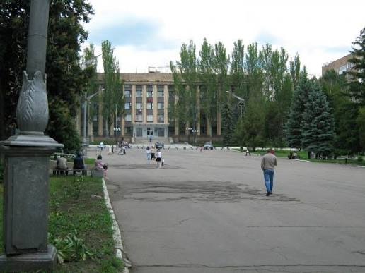
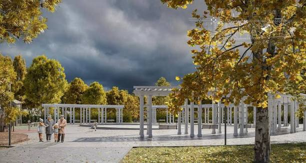
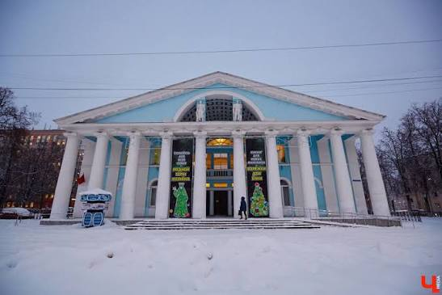
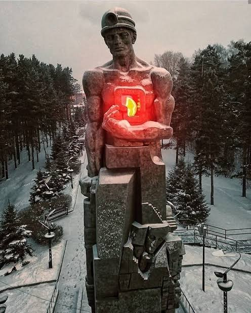
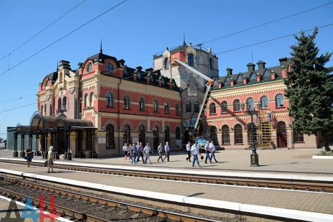

Открытие городского парка
После реконструкции открыт центральный парк с новыми аллеями.
Новое
1
Торез — город в Донецкой области, крупный центр угольной промышленности Донбасса. Расположен на реке Севастьяновка.
Как говорят местные: Торез — город шахтёрской славы
.





После реконструкции открыт центральный парк с новыми аллеями.
В городе прошёл ежегодный фестиваль народного творчества.